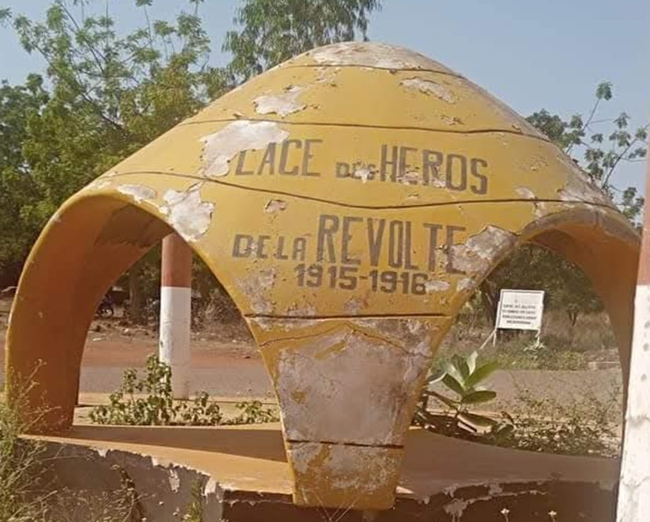
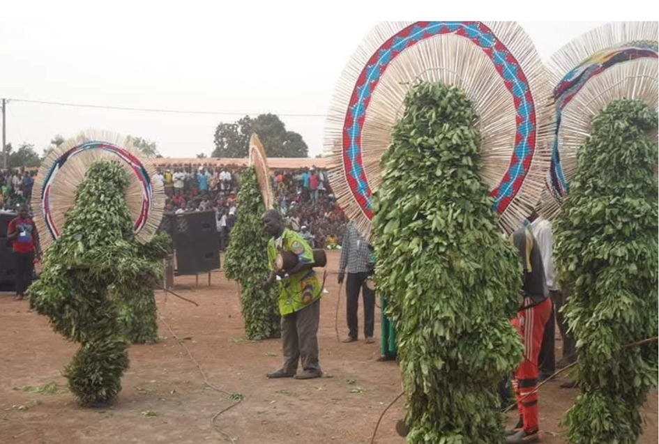
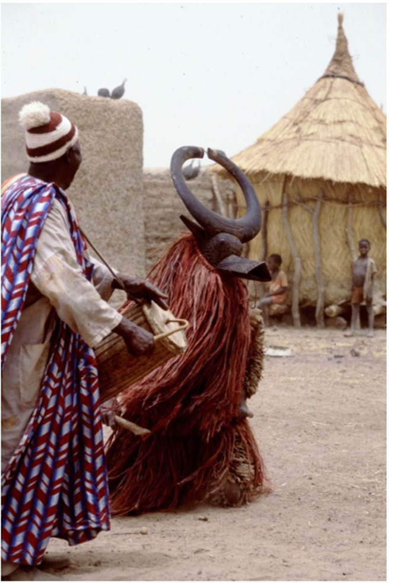
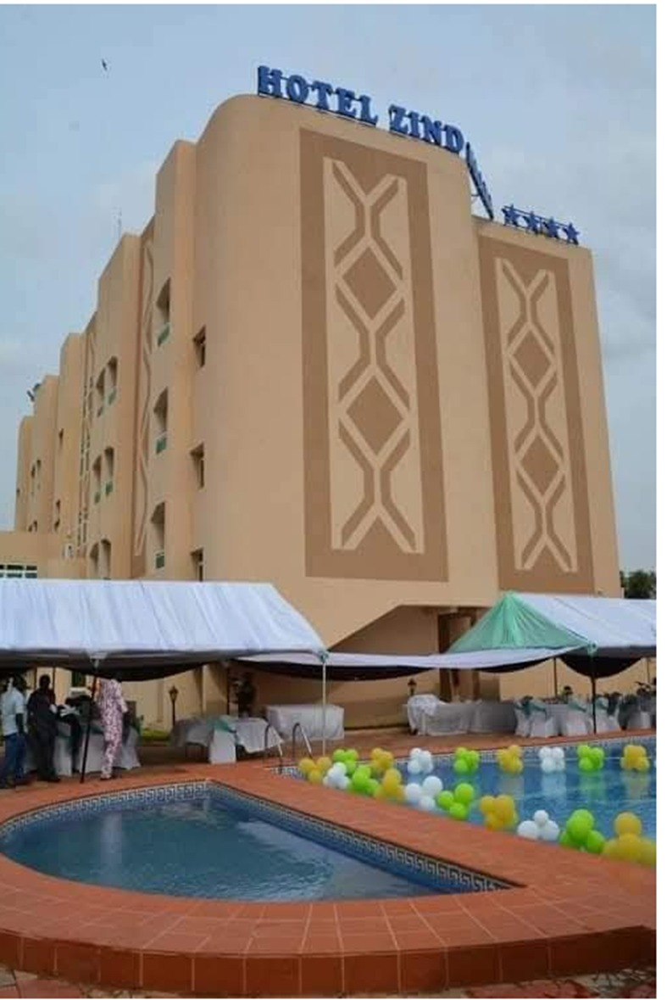
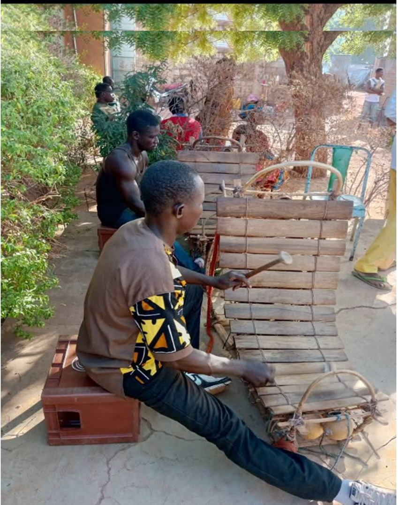

Paysages et sites touristiques
Bankui se distingue par la diversité de ses écosystèmes et la richesse de ses sites naturels,
historiques et culturels. Les forêts galeries et les berges du fleuve Mouhoun, notamment dans
les provinces du Mouhoun et des Balé, offrent des paysages luxuriants propices à l’écotourisme,
à la randonnée, au canoë et à l’observation de la faune et de la flore.
Le site historique de Douroula, inscrit sur la liste indicative du patrimoine mondial de l’UNESCO,
constitue un haut lieu archéologique lié à l’ancienne métallurgie du fer, attirant aussi bien les
chercheurs que les curieux d’histoire. Non loin de là, les cascades naturelles de Poura, encore peu connues,
pourraient devenir une destination de choix pour le tourisme de détente et de découverte.

Dans la province des Banwa, les fêtes traditionnelles, les rites initiatiques et les cérémonies masquées, ancrées dans
les traditions animistes, offrent une immersion culturelle rare. Ces événements permettent aux visiteurs de découvrir les
savoirs ancestraux, les danses sacrées et la richesse spirituelle des peuples Bwaba, Dafing, Marka ou Mossi. Les marchés
hebdomadaires de Solenzo, Kouka, Dédougou ou encore Boromo sont autant de lieux vivants où se mêlent artisanat local,
spécialités culinaires et ambiance populaire.
Activités culturelles et festivals majeurs
La région de Bankui est également animée par un riche calendrier culturel qui célèbre ses traditions et ses peuples dans toute leur diversité.
Les fêtes traditionnelles et cérémonies masquées dans la province des Banwa sont des moments forts où danses sacrées,
musiques rituelles et costumes traditionnels plongent les visiteurs au cœur des croyances animistes locales. Ces cérémonies,
très codifiées, honorent les ancêtres et rythment la vie communautaire.
Les marchés hebdomadaires de Solenzo, Kouka, Dédougou et Boromo ne sont pas seulement des espaces d’échanges commerciaux
mais aussi de rencontres culturelles. Artisans, conteurs, musiciens et danseurs s’y retrouvent pour partager leur savoir-faire,
leurs histoires et leurs rythmes, offrant une expérience authentique aux visiteurs.

Le Festival des Arts et Cultures de Dédougou (FACD), bien que plus modeste que le célèbre FESTIMA, met en lumière
les talents locaux à travers des spectacles de musique, danse et théâtre traditionnel, favorisant la sauvegarde du
patrimoine immatériel.
Les rites initiatiques, particulièrement présents chez les populations Bwaba et Marka, marquent des étapes importantes
de la vie sociale. Ils sont accompagnés de danses et musiques spécifiques, révélant une profonde spiritualité.

Autour du site historique de Douroula, des animations culturelles présentent la métallurgie traditionnelle du fer,
un savoir-faire ancestral qui fait la fierté de la région. Ces démonstrations allient histoire, artisanat et pédagogie,
suscitant l’intérêt des chercheurs comme des touristes.
Les rassemblements autour de la nature contribuent à faire vivre la région tout au long de l'année.
Un secteur hôtelier en pleine structuration

Le développement du tourisme à Bankui s’accompagne d’une structuration progressive du secteur hôtelier.
Des établissements d’hébergement existent déjà dans les principales villes telles que Dédougou, Boromo et
Solenzo, avec des services allant du confort simple aux installations adaptées aux séjours professionnels.
Dédougou, chef-lieu de la région, offre plusieurs hôtels de standing moyen dotés de salles de conférence et de
services de restauration, accueillant aussi bien des voyageurs que des missions de travail. Boromo, positionnée
sur l’axe Ouagadougou–Bobo-Dioulasso, est une escale stratégique qui attire une clientèle variée. Des auberges et
hôtels bien situés y existent, bien que modestes, avec de réelles opportunités pour de futurs investissements.
Quant à Solenzo, bien que moins développée sur le plan touristique, elle voit émerger progressivement de petites
structures d’accueil, notamment lors des grands rassemblements traditionnels.
